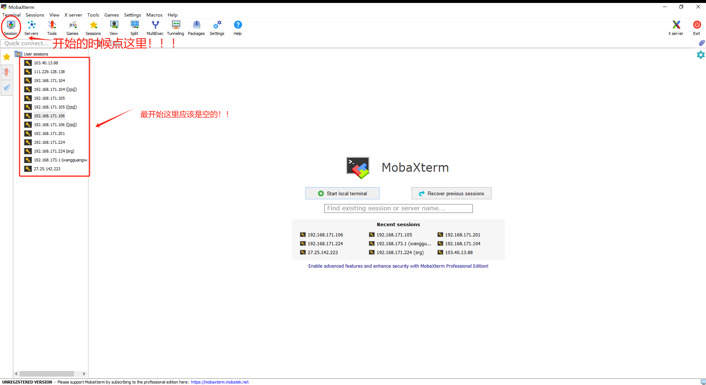

服务器终端程序MobaXterm安装包
时间：2025-09-10
分类：材料计算
如题，这是MobaXterm的安装包，你可以直接点击这里下载。
下载完成后，如正常程序一样解压、安装，安装完成后进入程序，点击上方Session-SSH，输入服务器IP地址（在注册账号时会提供ip地址）
完成后双击左侧IP地址进入服务器，输入用户名和密码（注意：密码看不见，屏幕上不显示是正常的）即可。用户名和密码会在创建账户时提供。
同分类上一篇：使用sed与正则表达式修改INCAR参数
同分类下一篇：如何结合CP2K+Multiwfn做ELF拓扑分析